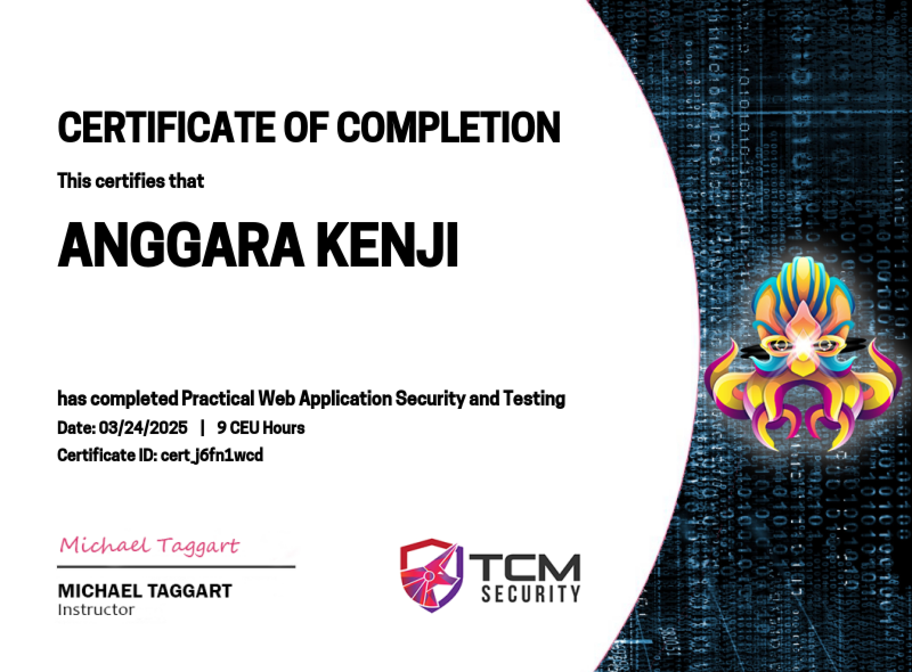

📚 Kursus & Pelatihan
JadiHacker - Intro SOC Analyst

Status: Lulus
Pelatihan pengantar untuk menjadi SOC Analyst. Materi mencakup dasar-dasar keamanan siber, analisis alert, hingga penggunaan SIEM. Disediakan hands-on lab dan ujian akhir sebagai validasi kompetensi.
JadiHacker - Android Application Penetration Testing

Status: Lulus
Pelatihan ini merupakan pengantar untuk menjadi Android Application Pentester. Materi mencakup dasar-dasar keamanan aplikasi mobile(android), teknik analisis ancaman, serta penggunaan alat bantu seperti emulator dan proxy. Tersedia hands-on lab dan ujian akhir sebagai validasi kompetensi peserta.
TCM Security - Practical Web Security
Status: Dalam Proses
Kursus ini berfokus pada pengujian keamanan web seperti XSS, SQLi, IDOR, dan CSRF. Disediakan lab interaktif untuk mengasah kemampuan offensive web security.
Sekolah Hacker - Cyber Security Fundamental

Status: Selesai
Kursus yang membahas konsep dasar cybersecurity termasuk CIA Triad, teknik footprinting, hingga pengenalan terhadap exploitasi. Sangat cocok untuk pemula.
Radware - Alteon Level 1

Status: Selesai
Pelatihan ini memperkenalkan konsep dasar dari Radware Alteon, termasuk pengelolaan load balancing, optimasi aplikasi, dan pengaturan traffic untuk meningkatkan performa dan keamanan jaringan.
Radware - DefenseProX Level 1

Status: Selesai
Kursus ini membahas fitur-fitur utama dari Radware DefensePro, seperti proteksi terhadap serangan DDoS, inspeksi lalu lintas real-time, dan penggunaan signature untuk mendeteksi serta mencegah ancaman keamanan secara proaktif